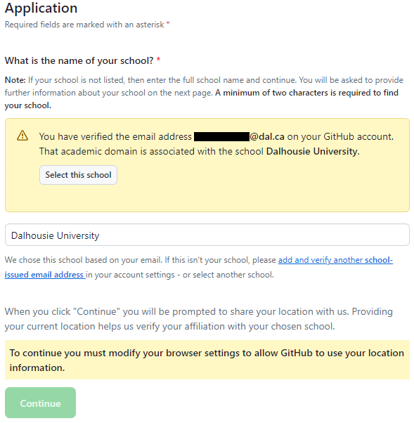

Getting Setup
This document will teach you how to setup your computer with GitHub, VSCode and a Virtual Environment so you can start working on python projects!
Step 1: Installing Visual Studio Code
First, you’ll want to download and install the latest version of Visual Studio Code. Make sure you download the correct version for your computer (Windows, Mac, Linux).
Follow the steps in the dialog windows, and while it’s installing head to step 2
Click to learn more about VS Code!
Visual Studio Code (often referred to as VS Code) is a free, open-source code editor developed by Microsoft. It’s lightweight, yet powerful, and supports development in multiple programming languages such as Python, JavaScript, Java, C++, and many more. VS Code features include syntax highlighting, intelligent code completion (IntelliSense), code refactoring, and debugging tools. It also supports Git for version control, has a built-in terminal for command-line operations, and a rich ecosystem of extensions for enhancing its functionality. It’s designed to be highly customizable, allowing users to change the editor’s theme, keyboard shortcuts, and preferences. VS Code is available for Windows, macOS, and Linux. It’s widely used by developers across the globe for both small and large scale projects.
Step 2: Setting up GitHub
While VS Code is installing, head over to GitHub.com and make an account if you don’t already have one. Make sure you use your Dalhousie email when signing up as this will allow you to sign up for the student developer pack which gives you access to AI tools like GitHub Copilot!
Click to learn more about GitHub!
GitHub is a web-based platform used for version control and collaboration. It allows multiple people to work on projects at once without overwriting each other’s changes. GitHub is built on Git, a distributed version control system that tracks changes to files. With GitHub, you can manage and store revisions of projects, share your code with others, view and track changes, and even revert back to previous versions of your code. It’s widely used by software developers for personal projects, open-source projects, and team-based enterprise software development.
Once you’ve made and verified your account, head over to the GitHub Student Developer Pack Application. Make sure Student is selected, and then scroll down to the bottom of the page.
If you signed up with your Dalhousie email address, it should automatically detect Dalhousie University as your school. Click Select this School, and then Continue. If you don’t see this, enter your Dalhousie email address and verify it now.

On the next page, you will have to take a picture of your Dalhousie Student ID (I reccomend using your laptop webcam for simplicity), and upload it to the